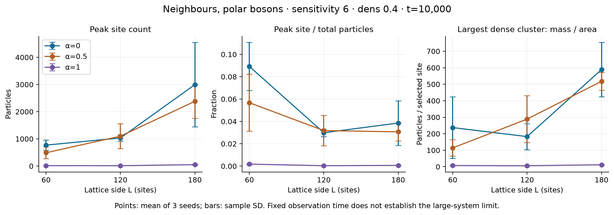
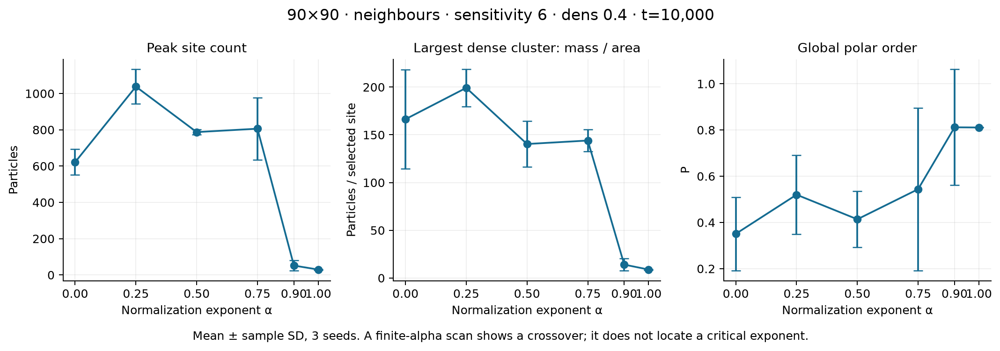
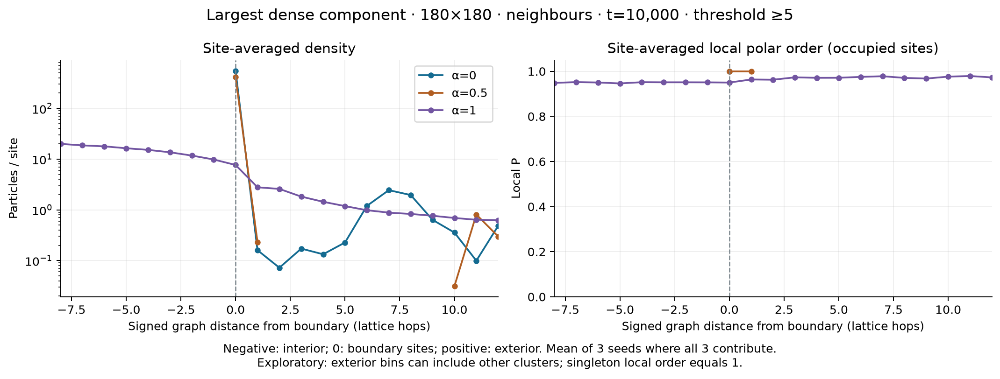

LGCA · exploratory resultsA useful lead: α between 0.75 and 0.9
At these settings, strong concentration drops sharply across this interval. This is a starting bracket, not a confirmed condensation threshold.
Bosons · polar alignment · six neighbours, centre excluded · density input 0.4
Follow-up: the .75–.90 interval was a snapshot contrast, not an established condensation threshold. See the newer cluster-density and time comparison.
Change size, seed, time or view
Next: test α = 0.75, 0.80, 0.85 and 0.90 across larger sizes and longer times. A sharper snapshot change alone would not establish divergence.
Time curves and averages across three seeds
What changes with time?
Reading the measurements
Peak / N asks whether one site contains an appreciable fraction of the system. Cluster mass / N asks the same question about a connected dense structure. Mass / area distinguishes growing density from growth in spatial extent.
Clusters use connected sites with count ≥ ceil(2 × mean count), usually 5 particles/site. The area is the number of those sites, and mass is their particle count. This is a working measurement definition. Other thresholds are recorded in the data.
All three seeds, same size and time
Mean ± sample standard deviation across three seeds; descriptive spread, not a confidence interval or equilibrium estimate.
Figures: system size, alpha and cluster edges
These figures have their own settings, shown in their captions.



What does alpha divide?
The channel score is sensitivity × (sum of alignment contributions) / Mα, where M is the number of contributing particles. At fixed directional composition, its strength grows as M1−α. Alpha 0 gives sum; alpha 1 gives average. It is not division by alpha and not division by cluster area.
Why a slider alone is not an alpha sweep
Changing alpha during a run starts from a state shaped by the previous alpha. For this pilot, every alpha began from the same initialization recipe and each seed was repeated independently. The controls here select already computed runs. “Open settings in Lab” starts a fresh paused run at those parameters; it does not load the displayed late-time state.
Confirmed sources and working interpretations
The forwarded Zoom summary specifies polar neighbours, alpha 0/intermediate/1, system-size comparison and cluster-edge density/order profiles. Its “1/alpha” wording is inconsistent with alpha=0, so this study implements the Mα denominator recalled in Alejandro’s notes. The precise neighbourhood and condensation criterion remain questions for Manik.
Manik, Fernando and colleagues: polar condensates and nematic filaments · Chepizhko, Saintillan & Peruani: additive and non-additive alignment
Download data and methods